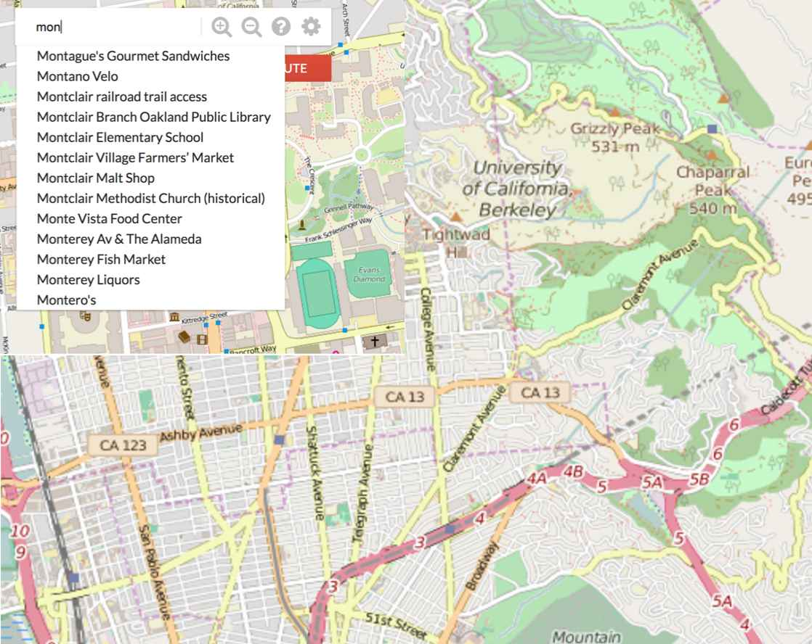

BearMaps (Java)
This project was one I did while learning Java in my CS61B class. We implemented a Google Maps type application that determined the shortest route between two locations in the UC Berkeley campus. It supported a zoom function, which I implemented using a QuadTree class. The shortest paths algorithm was implemented using Djikstra's Shortest Path Algorithm. We distributed nodes across the entire map so that we could use Djikstra's to predict the shortest path between two locations. The autofill function, as demonstrated in the picture above, was implemented using a tri.